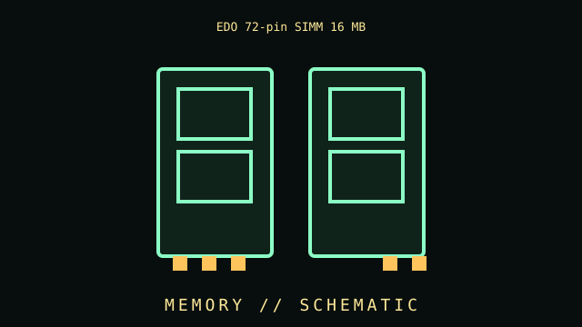

[ SIMM AND EARLY PC MEMORY // IDENTIFIED COMPONENT ]
EDO 72-pin SIMM 16 MB
Extended Data Out FPM-era memory module. This file identifies a specific part or clearly bounded model family, rather than an overview of the category.

IDENTIFY THE REVISION: Check the complete product code, suffix, board revision, region, firmware, and date code. Similar names do not guarantee the same hardware.
Part specifications
| Catalog subcategory | SIMM and early PC memory |
|---|---|
| Catalog identity | EDO 72-pin SIMM 16 MB |
| Generation / family | Extended Data Out FPM-era memory module |
| Architecture / ratings | 72-pin SIMM; 32-bit non-parity or 36-bit parity configurations; 16 MB capacity is common in later EDO modules. |
| Interface / fit | EDO support, maximum module density, access time and bank population depend on motherboard/chipset. |
| Variants / field identification | EDO and FPM may fit same socket but timing capability must be supported; parity is a separate property. |
| Evidence to collect | Photograph the nameplate and PCB labels; record test system, firmware, installed accessories, condition, and manual/datasheet revision used to verify specifications. |
Compatibility, care & service
- Check electrical signaling, pinout, voltage, current, connector, mounting and supported firmware before installation; do not rely on matching shapes alone.
- Inspect physical condition and manufacturer warnings; mains PSUs, CRTs, batteries and spinning media may retain hazardous energy or require specialist service.
- For vintage equipment, use the correct bus generation, BIOS, driver, media type, cable orientation and resource configuration documented for the machine.
- Record measured results separately from the manufacturer's published limits and state the setup and measurement conditions.
Model-specific notes
EDO support, maximum module density, access time and bank population depend on motherboard/chipset.
EDO and FPM may fit same socket but timing capability must be supported; parity is a separate property.
Sources & further reading
- Manufacturer / standards reference — EDO 72-pin SIMM 16 MBSource for product-family specifications; compare exact suffix, revision, and region with the unit label.
- Manufacturer / standards reference — EDO 72-pin SIMM 16 MBSource for product-family specifications; compare exact suffix, revision, and region with the unit label.
Links lead to manufacturer or standards references where available. If a source covers a family, use the exact model's manual as the final authority.